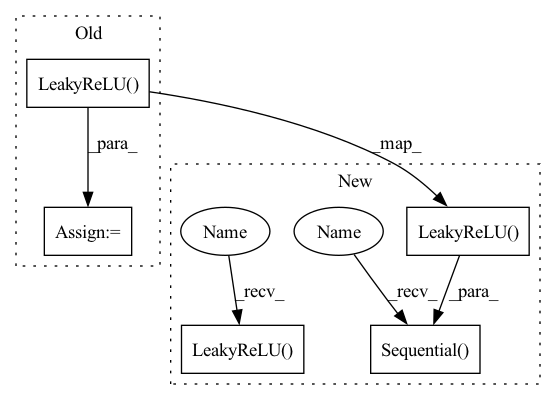

Pattern ID :326

Before Change
out_channels //= 2
in_channels = out_channels
block += [nn.Conv2d(in_channels, out_channels, 3),
nn.LeakyReLU(0.2),
nn.Conv2d(out_channels, out_channels, 3)]
self.features = nn.Sequential(*block)
After Change
def __init__(self):
super(Discriminator, self).__init__()
self.features = nn.Sequential(
// Conv0
nn.Conv2d(3, 64, kernel_size=3, stride=1, padding=1, bias=False),
nn.LeakyReLU(negative_slope=0.2, inplace=True),
nn.Conv2d(64, 64, kernel_size=4, stride=2, padding=1, bias=False),
nn.BatchNorm2d(64),
nn.LeakyReLU(negative_slope=0.2, inplace=True),
// Conv1
nn.Conv2d(64, 128, kernel_size=3, stride=1, padding=1, bias=False),
nn.BatchNorm2d(128),
nn.LeakyReLU(negative_slope=0.2, inplace=True),
nn.Conv2d(128, 128, kernel_size=4, stride=2, padding=1, bias=False),
nn.BatchNorm2d(128),
nn.LeakyReLU(negative_slope=0.2, inplace=True),
// Conv2
nn.Conv2d(128, 256, kernel_size=3, stride=1, padding=1, bias=False),
nn.BatchNorm2d(256),
nn.LeakyReLU(negative_slope=0.2, inplace=True),
nn.Conv2d(256, 256, kernel_size=4, stride=2, padding=1, bias=False),
nn.BatchNorm2d(256),
nn.LeakyReLU(negative_slope=0.2, inplace=True),
// Conv3
nn.Conv2d(256, 512, kernel_size=3, stride=1, padding=1, bias=False),
nn.BatchNorm2d(512),
nn.LeakyReLU(negative_slope=0.2, inplace=True),
nn.Conv2d(512, 512, kernel_size=4, stride=2, padding=1, bias=False),
nn.BatchNorm2d(512),
nn.LeakyReLU(negative_slope=0.2, inplace=True),
// Conv4
nn.Conv2d(512, 512, kernel_size=3, stride=1, padding=1, bias=False),
nn.BatchNorm2d(512),
nn.LeakyReLU(negative_slope=0.2, inplace=True),
nn.Conv2d(512, 512, kernel_size=4, stride=2, padding=1, bias=False),
nn.BatchNorm2d(512),
nn.LeakyReLU(negative_slope=0.2, inplace=True)
)
self.avgpool = nn.AdaptiveAvgPool2d((512, 512))
self.classifier = nn.Sequential(
nn.Linear(8192, 100),
nn.LeakyReLU(negative_slope=0.2, inplace=True),
nn.Linear(100, 1)
)
In pattern: SUPERPATTERN
Frequency: 3
Non-data size: 5
Instances
Fragment ID: 1212690
Project Name: lornatang/esrgan-pytorch
Commit Name: 8ef58f0f8458d618a99fffa07433927c9b9ef70f
Time: 2020-10-12
Author: liuchangyu1111@gmail.com
File Name: esrgan_pytorch/model.py
Class Name: Discriminator
Method Name: __init__
Parent Class: nn.Module
Fragment ID: 1212682
Project Name: coqui-ai/tts
Commit Name: 7b7c5d635fc42be520f86524c6d3c79d7ef48d39
Time: 2021-04-08
Author: rishikksh20@gmail.com
File Name: TTS/vocoder/models/hifigan_mpd_discriminator.py
Class Name: PeriodDiscriminator
Method Name: __init__
Parent Class: nn.Module
Fragment ID: 1212684
Project Name: suessmann/intelligent_traffic_lights
Commit Name: 24ea840ae82688fe7d105ef9c0a483f1cd52e1a4
Time: 2020-06-04
Author: ilyazisman@gmail.com
File Name: src/dqn.py
Class Name: DQNetwork
Method Name: __init__
Parent Class: nn.Module